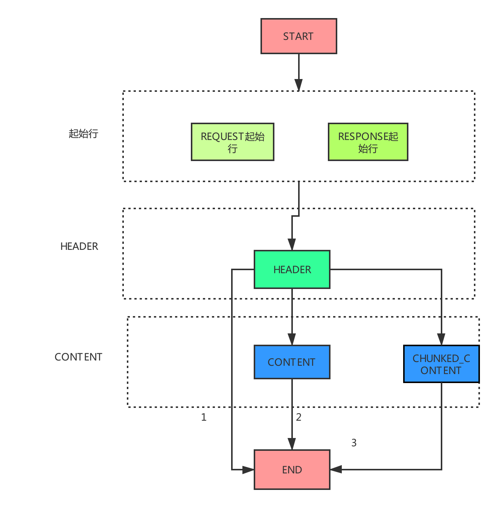
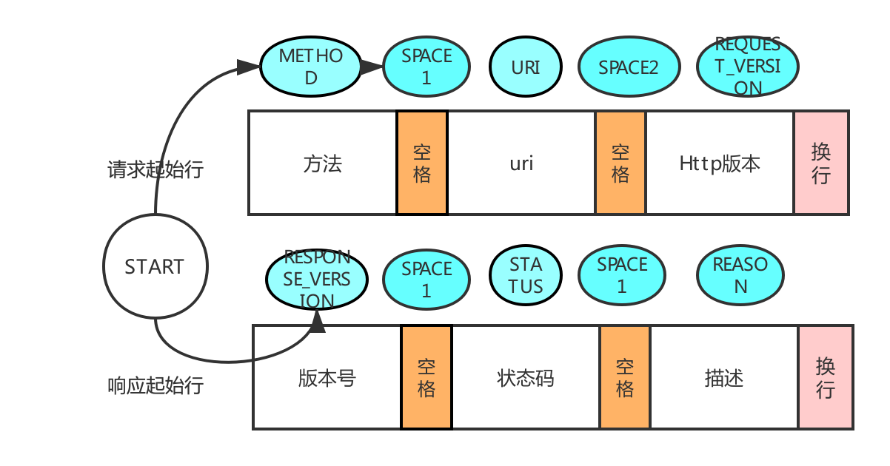
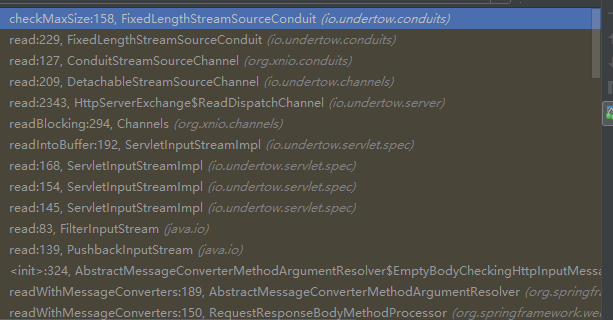

原文连接:https://www.cnblogs.com/stoneFang/p/11644723.html
摘要
在详解http报文一文中，详细介绍了http报文的文本结构。那么作为服务端，web容器是如何解析http报文的呢？本文以jetty和undertow容器为例，来解析web容器是如何处理http报文的。
在前文中我们从概览中可以了解到，http报文其实就是一定规则的字符串，那么解析它们，就是解析字符串，看看是否满足http协议约定的规则。
start-line: 起始行,描述请求或响应的基本信息
*( header-field CRLF ): 头
CRLF
[message-body]: 消息body，实际传输的数据
jetty
以下代码都是jetty9.4.12版本
如何解析这么长的字符串呢，jetty是通过状态机来实现的。具体可以看下org.eclipse.jetty.http.HttpParse类
public enum State
{
START,
METHOD,
,
SPACE1,
STATUS,
URI,
SPACE2,
REQUEST_VERSION,
REASON,
PROXY,
HEADER,
CONTENT,
EOF_CONTENT,
CHUNKED_CONTENT,
CHUNK_SIZE,
CHUNK_PARAMS,
CHUNK,
TRAILER,
END,
CLOSE, // The associated stream/endpoint should be closed
CLOSED // The associated stream/endpoint is at EOF
}总共分成了21种状态，然后进行状态间的流转。在parseNext方法中分别对起始行 -> header -> body content分别解析
public boolean parseNext(ByteBuffer buffer)
{
try
{
// Start a request/response
if (_state==State.START)
{
// 快速判断
if (quickStart(buffer))
return true;
}
// Request/response line 转换
if (_state.ordinal()>= State.START.ordinal() && _state.ordinal()<State.HEADER.ordinal())
{
if (parseLine(buffer))
return true;
}
// headers转换
if (_state== State.HEADER)
{
if (parseFields(buffer))
return true;
}
// content转换
if (_state.ordinal()>= State.CONTENT.ordinal() && _state.ordinal()<State.TRAILER.ordinal())
{
// Handle HEAD response
if (_responseStatus>0 && _headResponse)
{
setState(State.END);
return handleContentMessage();
}
else
{
if (parseContent(buffer))
return true;
}
}
return false;
}整体流程
整体有三条路径
- 开始 -> start-line -> header -> 结束
- 开始 -> start-line -> header -> content -> 结束
- 开始 -> start-line -> header -> chunk-content -> 结束

起始行
start-line = request-line(请求起始行）/（响应起始行）status-line

请求报文解析状态迁移
请求行：START -> METHOD -> SPACE1 -> URI -> SPACE2 -> REQUEST_VERSION响应报文解析状态迁移
响应行：START -> RESPONSE_VERSION -> SPACE1 -> STATUS -> SPACE2 -> REASON
header 头
HEADER 的状态只有一种了，在jetty的老版本中还区分了HEADER_IN_NAM, HEADER_VALUE, HEADER_IN_VALUE等，9.4中都去除了。为了提高匹配效率，jetty使用了Trie树快速匹配header头。
static
{
CACHE.put(new HttpField(HttpHeader.CONNECTION,HttpHeaderValue.CLOSE));
CACHE.put(new HttpField(HttpHeader.CONNECTION,HttpHeaderValue.KEEP_ALIVE));
// 以下省略了很多了通用header头content
请求体：
- CONTENT -> END，这种是普通的带Content-Length头的报文，HttpParser一直运行CONTENT状态，直到最后ContentLength达到了指定的数量，则进入END状态
- chunked分块传输的数据
CHUNKED_CONTENT -> CHUNK_SIZE -> CHUNK -> CHUNK_END -> END
undertow
undertow是另一种web容器，它的处理方式与jetty有什么不同呢
状态机种类不一样了，io.undertow.util.HttpString.ParseState
public static final int VERB = 0;
public static final int PATH = 1;
public static final int PATH_PARAMETERS = 2;
public static final int QUERY_PARAMETERS = 3;
public static final int VERSION = 4;
public static final int AFTER_VERSION = 5;
public static final int HEADER = 6;
public static final int HEADER_VALUE = 7;
public static final int PARSE_COMPLETE = 8;具体处理流程在HttpRequestParser抽象类中
public void handle(ByteBuffer buffer, final ParseState currentState, final HttpServerExchange builder) throws BadRequestException {
if (currentState.state == ParseState.VERB) {
//fast path, we assume that it will parse fully so we avoid all the if statements
// 快速处理GET
final int position = buffer.position();
if (buffer.remaining() > 3
&& buffer.get(position) == 'G'
&& buffer.get(position + 1) == 'E'
&& buffer.get(position + 2) == 'T'
&& buffer.get(position + 3) == ' ') {
buffer.position(position + 4);
builder.setRequestMethod(Methods.GET);
currentState.state = ParseState.PATH;
} else {
try {
handleHttpVerb(buffer, currentState, builder);
} catch (IllegalArgumentException e) {
throw new BadRequestException(e);
}
}
// 处理path
handlePath(buffer, currentState, builder);
// 处理版本
if (failed) {
handleHttpVersion(buffer, currentState, builder);
handleAfterVersion(buffer, currentState);
}
// 处理header
while (currentState.state != ParseState.PARSE_COMPLETE && buffer.hasRemaining()) {
handleHeader(buffer, currentState, builder);
if (currentState.state == ParseState.HEADER_VALUE) {
handleHeaderValue(buffer, currentState, builder);
}
}
return;
}
handleStateful(buffer, currentState, builder);
}与jetty不同的是对content的处理，在header处理完以后，将数据放到io.undertow.server.HttpServerExchange,然后根据类型，有不同的content读取方式，比如处理固定长度的，FixedLengthStreamSourceConduit。

关注公众号【方丈的寺院】，第一时间收到文章的更新，与方丈一起开始技术修行之路

参考
http://www.blogjava.net/DLevin/archive/2014/04/19/411673.html
https://www.ph0ly.com/2018/10/06/jetty/connection/http-parser/